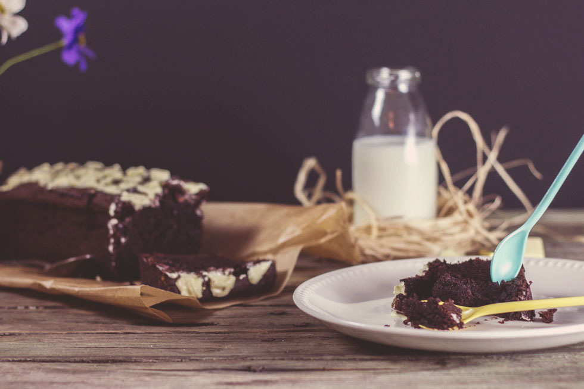
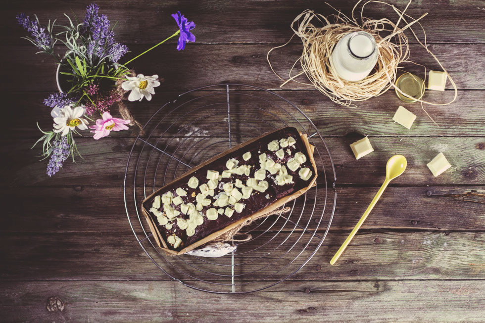

Banana bread au chocolat

Ici vous trouverez la recette du banana bread au chocolat. Un gâteau ultra moelleux pour un goûter, dessert ou encore pour un petit déjeuner bien gourmand! Vous l’aviez surement vu passer sur instagram dernièrement alors voici enfin la recette de mon banana bread au chocolat!!! Comme je vous l’avez déjà expliqué, il est assez rare que je mange un fruit comme ça tout seul à part les fruits d’été mais sinon « dur dur ». Alors, généralement, je me fais soit un smoothie, soit une tarte, soit une compote (ou une fondue au chocolat 🙂 ) et ça passe tout seul. Cette fois-ci, mes bananes se sont retrouvées dans une pâte à gâteau et elles y étaient bien meilleures que seules dans leur peau!!>
Avant de vous donner la recette, connaissez-vous le banana bread? Pour info, c’est le gâteau super méga bon qui nous vient tout droit des États-Unis et qui fut créé par les ménagères qui comme moi avaient un peu pitié de leurs bananes un peu trop mûres et qui ne voulaient pas pour autant s’en débarrasser! La version « la plus connue » que je compte bien mettre un jour sur ce blog est celui aux pépites de chocolat mais celui que je vous propose aujourd’hui est encore plus chocolaté et je n’ai pas pu m’empêcher d’y ajouter des morceaux de chocolat blanc sur le dessus. Ce gâteau est très moelleux, très tendre et le petit goût apporté par les bananes et juste parfait!
S’il vous reste dans vos placards une plaquette de chocolat, un peu de cacao et quelques bananes qui attendent de se faire manger alors vous savez maintenant quoi faire.
Je vous laisse avec la recette et j’espère qu’elle vous plaira!
Ingrédients
- Chocolat noir - 110g
- Sucre - 100g
- Vergeoise brune - 20g
- Beurre - 150g
- Cacao en poudre - 30g
- Farine - 150g
- Bicarbonate de sodium - 1 càc
- Sel - 1 pincée
- Vanille - 1 càc
- Bananes (mûres) - 3
- Oeuf - 1
- Chocolat blanc - 50g
- Extrait de vanille - 1 càc
Instructions
- Préchauffer le four à 170°
- Beurrer un moule à cake
- Faire fondre le beurre
- Faire fondre le chocolat au bain marie et réserver
- Écraser les bananes dans un grand saladier
- Ajouter la vergeoise, le sucre, le beurre fondu, les œufs et l'extrait de vanille
- Mélanger jusqu'à obtenir un mélange homogène
- Mélanger la farine avec le sel et le bicarbonate, le cacao en poudre et l'ajouter petit à petit au mélange précédent tout en remuant
- Ajouter le chocolat et mélanger jusqu'à obtenir un mélange homogène
- Verser dans le moule à cake préalablement beurré
- Enfourner 55 minutes (vérifier régulièrement la cuisson car selon les fours ce la peut varier de 5 à 10 min. Ici j'ai utilisé la chaleur tournante).
- Mettre les morceaux de chocolat blanc 1 minute avant la fin de la cuisson (ou à la sortie du four) afin qu'il fonde sur le dessus A la sortie du four, si vous enfoncez la pointe d'un couteau elle ne doit pas ressortir complément sèche étant donné qu'il s'agit d'un gâteau, moelleux, fondant et tendre.
- Laisser refroidir et déguster sans plus attendre!


Les tips de la communauté
Gâteau très gourmand et très apprécié, particulièrement pour sa texture moelleuse et sa richesse en chocolat. Les recettes comportent le cacao en poudre une recette comportait une imprécision sur l'ajout du cacao. Plusieurs testeurs ont noté la délicieuse odeur pendant la cuisson.
Astuces
- Important : incorporer le cacao en poudre correctement dans la préparation
- Deux bananes recommandées plutôt que trois si elles sont très grosses
- Utiliser du bicarbonate de soude (la levure chimique fonctionne moins bien)
- Meilleur dégustation le jour même ou le lendemain de sa cuisson
Variantes suggérées
- Levure chimique peut remplacer le bicarbonate (moins de moelleux)
- Réduction du nombre de bananes si elles sont très grosses
Ajustements signalés
- Position du cacao en poudre dans la recette à clarifier (ajout avec chocolat fondu)